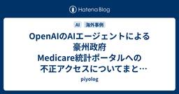

piyolog
https://piyolog.hatenadiary.jp/
piyokangoの備忘録です。セキュリティの出来事を中心にまとめています。このサイトはGoogle Analyticsを利用しています。
フィード

WordPress Coreの脆弱性CVE-2026-87902についてまとめてみた 24
24
piyolog
2026年9月22日、WordPressは、WordPress Coreに深刻な脆弱性が確認されたとして、修正版を公開、さらに4.7系までの古い系列にも同様に修正を提供しました。ここでは関連する情報をまとめます。どんな脆弱性が確認されたの?WordPress Coreのページテンプレートの解決(get_page_template())で、認証不要の攻撃者が、一定の条件下で、有効なテーマのディレクトリ外にある読み取り可能なローカルPHPファイルをインクルードさせられる。サーバー環境と有効なテーマの双方の前提条件を満たす場合は、リモートコード実行(RCE)に至りうる*1。(出典: 1, 3, 4)WordPressは、7.1.2のリリースで「クリティカルな深刻度」の脆弱性としている。変更されたファイルは/wp-includes/template.phpの1件。(出典: 1, 2)修正公開と同日に発見者がPoCを公開し、CISAは9月25日にKEVカタログへ追加した。(出典: 5, 9)脆弱性概要CVE CVE-2026-87902(GHSA-7hp8-65ch-5whp) CVSS 9.2(CVSS 4.0)、8.1(CVSS 3.1) CWE CWE-98（PHP リモートファイルインクルージョン） 悪用時影響 認証の必要なく、条件を満たす場合に任意のコード実行の恐れ 悪用状況 PoC公開。悪用試行観測済。CISA KEVに登録済 CVSS 9.2はGHSAの記載、8.1はCVEレコードに掲載されたCISAの評価。(出典: 3, 4)発見者は2026年7月20日にHackerOneのWordPressプログラム経由で非公開に報告したもの。(出典: 5)どのような条件で任意のコード実行に至るの?GHSAは、RCEの前提条件として次の2点を挙げている。(出典: 3)テーマ側: 有効な子テーマまたは親テーマが、名前が「page-」で始まるトップレベルのディレクトリ(例: page-templates)を持つこと。該当するテーマとして、旧来のTwenty TwelveとTwenty Fourteen、サードパーティ製のNeve、Hestia、Sydneyなどが挙げられている。サーバー側: インクルード対象にするローカルの.phpファイルが存在し、かつWebサーバー側のアカウン
1日前

ApplyNowの採用管理プラットフォームへの不正アクセスについてまとめてみた 1
piyolog
2026年9月9日、ApplyNowは、同社が提供する採用管理プラットフォームで、利用しているデータ分析ツールの脆弱性を突いた第三者による不正アクセスが発生し、個人データが外部へ漏えいした可能性があると公表しました。その後、複数の自治体や企業が、自組織の応募者や受験者の情報が対象に含まれると公表しています。ここでは関連する情報をまとめます。データ分析ツールの脆弱性を突いた不正アクセスApplyNowは2026年9月9日、コーポレートサイトで「当社サービスをご利用いただいているお客様への重要なお知らせとお詫び」を公表した。面接シェアリングサービス「Interview Cloud」、録画面接「ApplyNow」、電子雇用契約「ApplyNow Sign」の3サービスで、同社が利用しているデータ分析ツールの脆弱性を突いた第三者による不正アクセスが発生し、顧客と応募者の個人データが外部へ漏えいした可能性を検知した。不正アクセスが確認された期間は8月9日から9月7日。対象データ件数は「現在調査中」としているが、画像やPDF等のファイル実体と面接動画データは別の保管領域にあり、不正アクセスの対象外としている(出典: 1)。同社は9月7日、システム内部で異常なアクセスログを検知。その後の調査により不正アクセスの痕跡を確認し、同日中に遮断等の緊急措置を実施した。9月7日以降は弁護士と連携して被害状況の全容解明と法的対応を開始し、影響を受ける可能性のある企業ユーザーにパスワード変更を促す緊急連絡を配信している。また該当ツールへのアクセスの遮断と、脆弱性に対する修正版のセキュリティパッチの適用を完了した(出典: 1)。同社は9月16日、案内ページ「不正アクセスによる個人情報漏えいに関するご案内」を公開した。新たなサーバー環境への移行とセキュリティ強化を完了し、外部の専門調査会社による調査と監視を続けているとする。ApplyNowからお知らせのメールを受け取った人は対象に含まれ、漏えいした情報の項目はメールに記載されている(出典: 2)。またApplyNowを子会社とするきちりホールディングスは9月9日、「当社子会社における個人情報漏えいに関するお知らせとお詫び」を公表し、ApplyNowの公表を別紙として添付した(出典: 3)。サービス別の対象項目第一報が挙げた対象項目は、サービスごと
2日前

VOISINGの利用するBIツールへの不正アクセスについてまとめてみた
2
piyolog
2026年8月18日、VOISINGは、同社が利用するBIツールへの不正アクセスにより顧客の個人情報が漏えいしたと公表しました。ここでは関連する情報をまとめます。修正プログラムの適用前に脆弱性悪用株式会社VOISINGは9月30日の第四報で、専門機関による最終調査と社内精査がすべて完了したとして、調査結果を公表。原因は、BIツールの脆弱性を悪用されたことで、「該当ツールの修正プログラムを適用する前の段階で不正アクセスが行われ、当社システムへ侵入された結果、個人情報の漏洩へとつながる」としている(出典: 4)。今後の対策の項では、BIツールに存在した既知の脆弱性*1 に対する修正の適用が、脆弱性情報の公開から攻撃までの時間軸に間に合わなかったことを「直接の原因」としている(出典: 4)。同社は8月18日の第一報の時点で、原因とみられる脆弱性に対する修正プログラムの適用を完了したとしている(出典: 1)。不正アクセス被害の関連図 8月16日夜の約1時間半でデータ窃取VOISINGは、8月10日1時2分頃から、BIツールに対する外部からの不正アクセスが開始されたとしている。8月16日18時47分から20時21分にかけて、同ツール内に保管されていたデータが不正に取得(ダウンロード)された(出典: 1)。同社は同日23時55分に事態を確認。8月17日1時55分までに該当システムの停止とネットワークからの遮断を行った(出典: 1)。攻撃者はアカウントとAPIキーを作成しており、同社は発覚後にこれらを無効化した(出典: 4)。退会者や休眠の顧客も対象漏えいが確認された対象件数は約17万件(出典: 4)。第二報(8月20日)では、精査途中の暫定的な数値として、想定される対象人数の最大値を「約17万人」と公表していた(出典: 2)。対象は、次のサービスを利用した全ての顧客。退会者や一定期間利用のない休眠の顧客も含む(出典: 1)。VOISING IDVOISING CONNECTVOISING ONLINE STOREいれいす公式ファンクラブ「いれらぶ」(リニューアル前を含む)旧VOISINGアカウント旧オンラインストア(いれいすとあ、すたぽらしょっぷ、クロノストア、ブラフラショップ)漏えいが確認された情報は次のとおり(出典: 1, 4)。基本情報: 氏名、住所、電話番号、メールアド
3日前

NetScaler ADC/Gatewayの脆弱性CVE-2026-88771、CVE-2026-88772の悪用についてまとめてみた 3
piyolog
2026年9月27日、NetScaler ADCとNetScaler Gatewayを開発するCloud Software Groupは、両製品に複数の脆弱性が確認されたとしてセキュリティ情報を公開し、うち2件については未対策の環境での悪用を観測したとして、修正版への更新を案内しました。ここでは関連する情報をまとめます。観測された悪用事例は?Cloud Software Groupは、CVE-2026-88771とCVE-2026-88772の悪用を観測したと公表している*1。(出典: 1, 2)CISAは、この2件をそれぞれ単独でリモートコード実行を可能にいたるクリティカルなゼロデイ脆弱性としている。(出典: 4)CISAは、報告およびパートナーからの脅威情報により、脅威アクターがこの2件を世界的に悪用していることを確認したとして、2026年9月27日にKEVカタログへ追加した。(出典: 3, 4)カナダのサイバーセキュリティセンター(CCCS)は、世界の複数のCitrix顧客環境で悪用が観測されたとの報告があるとする一方、活動の全容は現時点で不明としている*2。(出典: 5)GreyNoiseは、同社の観測網に参加するセンサー1台で、9月24日に単一の攻撃元からNetScaler Gatewayに対するゼロデイ悪用の試行を観測したとしている。攻撃試行は失敗し、対象センサー上で足がかりは得られなかった。当時は公表前だったもので、同社はこれをCVE-2026-88771と結びつけている。(出典: 10) さらにこの試行の中で、攻撃者がroot権限の取得、Webシェルの設置、Webサーバーの設定変更と再起動を試みていたことが判明したとしている。(出典: 10)そのほか、セキュリティ研究者によれば攻撃が9月を通じて行われていたと指摘している。(出典: 8)また、Webシェルは機器ごとに固有で、攻撃者がアンチフォレンジックのコマンドを実行し、痕跡を削除する定期処理を設定していたとも指摘している*3。(出典: 9)watchTowrは、CVE-2026-88771の根本原因を解析した結果を公表し、影響の有無を確かめるための検出用ツールを公開している。(出典: 12)CVE-2026-88771の実証コード(PoC)も公開されている。(出典: 13)JPCERT/CCは、海外
4日前

ランサムウェア攻撃による京王電鉄グループのシステム障害についてまとめてみた
12
piyolog
2026年9月26日、京王電鉄は同社グループのサーバーがランサムウェアによる攻撃を受け、一部グループ会社の営業システムに支障が生じていると公表しました。同日以降、ホテルや流通、旅行などのグループ各社がシステム障害を告知しています。ここでは関連する情報をまとめます。9月26日未明にグループサーバーへの攻撃を確認京王電鉄は2026年9月26日未明、同社グループのサーバーへのランサムウェアによる攻撃を確認した。ただちにネットワーク遮断措置等を講じ、警察への通報等を行ったうえで、外部専門家の協力を得て攻撃の経路や被害の調査を進めている(出典: 1)。攻撃の確認は26日午前5時台から6時台という(出典: 13)。同社は一部グループ会社の営業システムに支障が生じているとし、現時点で鉄道の運行に支障はないとしている(出典: 1)。鉄道運行システムのサーバーは別系統という(出典: 14)。情報漏洩の事実は現時点で確認できておらず、事業に関する機密事項や顧客に関する情報などの流出を含めた影響範囲を調査中とした(出典: 1)。身代金の要求の有無などについて、京王電鉄は「詳細は控える」としている(出典: 14)。京王電鉄の問い合わせフォームや申込みの内容を確認できず京王電鉄は9月28日、同社の「お問合せフォーム」がランサムウェア攻撃の影響によるシステム障害で、登録された内容を確認できない状態になっていると公表した。問い合わせへの回答に時間を要し、状況によっては返信できない場合があるとしている(出典: 2)。同日、団体乗車券、京王ライナー個室プラン、京王ロケーションサービスも、フォームまたはメールによる申込み内容を確認できない状態と公表した。9月25日17時以降に申し込んだ顧客と新規に申し込む顧客に対し、鉄道営業部営業管理所への電話での申込みを依頼している(出典: 3)。ホテルで予約受付の停止や手続きの遅延京王プラザホテルは9月26日、同ホテルのサーバーへのランサムウェア攻撃を未明に確認したと公表した。外部ネットワークの遮断処置を講じ、京王電鉄と連携して警察と外部専門家に相談している。公式ホームページのお問合せフォームと各予約サイトからの問い合わせは回答まで通常より時間を要する場合があり、状況によっては返信できない場合がある。現時点でホテルの営業に支障はなく、情報漏洩の事実は現在確認できて
4日前

手間いらずの「TEMAIRAZU」シリーズへの不正アクセスについてまとめてみた 11
piyolog
2026年9月28日、手間いらずは同社のサイトコントローラー「TEMAIRAZU」シリーズを利用する宿泊施設に予約した人へ予約に関する不審なメッセージが届いており、調査より同社システムへの不正アクセスを確認したことを公表しました。ここでは関連する情報をまとめます。予約情報を把握したかのような不審なメッセージ手間いらずは、2026年9月21日深夜頃より、複数の宿泊施設から、予約者にWhatsApp等のメッセージアプリ、電子メール、SMS等で不審なメッセージが届いているとの連絡を受け始めた(出典: 1)。メッセージには宿泊予約に関する情報を把握しているとみられる内容が含まれ、予約の確認や確定、クレジットカード情報の再入力、緊急の支払い等を求めて不審なウェブサイトへ誘導するものがあるとしている(出典: 1)。スーパーホテルは、海外の送信元番号(+351など)からWhatsApp等で届く不審なメッセージに、名前や宿泊日などの予約情報が記載されている場合があると告知(出典: 17)。9月29日には、不審なメッセージの一部に「予約がキャンセルされた」という内容のものが確認されたと追記し、メッセージアプリ等で一方的にキャンセルを通知することはないと案内している(出典: 17)。スマイルホテルは、メッセージに氏名、宿泊施設名、宿泊日、予約金額など実際の情報が記載される場合があるとした(出典: 32)。手間いらずの公表より前の9月22日から25日にかけて、LIVELY HOTELS(9月22日)など複数のホテルが不審なメッセージへの注意喚起を掲載していた。各社は後の続報で、これらを本件と関係づけている(出典: 37, 39, 40)。調査過程で確認された不正アクセス手間いらずは、不審なメッセージに関する調査の過程で、同社システムへの不正アクセスを確認した。確認後は直ちにアクセスの遮断を含む被害拡大防止措置を講じて原因の調査を開始し(出典: 1)、宿泊者情報の一部が第三者に閲覧または取得された可能性を否定できない状況と明らかにした。（影響範囲を確認中）(出典: 1)。不審なメッセージは不正アクセスに起因する可能性があると考えているものの、両者の関係も確認中とした(出典: 1)。同社はクレジットカード情報を取り扱っておらず、データを保有していないとも説明している(出典: 1)。同社はこの
4日前

タイムズカーWebサイトへの不正アクセスについてまとめてみた
320
piyolog
2026年9月25日、タイムズモビリティとパーク24は、カーシェアリングサービス「タイムズカー」のWebサイトが不正アクセスを受け、会員の個人情報が外部に漏えいした可能性があると公表しました。その後の調査で、対象システムに保存されていた会員情報の一部が第三者に取得されたことが判明しています。ここでは関連する情報をまとめます。会員情報漏えいの可能性を公表タイムズカーは、パーク24グループのタイムズモビリティが運営するカーシェアリングサービス。タイムズモビリティとパーク24は2026年9月25日9時07分、自社システムへの不正アクセスを検知して調査を開始し、第三者がシステムにアクセスした形跡を確認(出典: 1, 3)。同日、個人情報漏えいの可能性について第1報を公表した。対象はタイムズカー会員および退会済みの会員。公表時点では漏えいした可能性のある情報が不特定多数に公開された事実や不正利用された事実は確認されておらず、サービス提供への影響も確認されていないとしている(出典: 1, 3)。第1報の公表を受け、西日本旅客鉄道は同日、タイムズカーにWESTER IDを登録している顧客について、漏えいの可能性がある情報にWESTER IDが含まれる可能性があると公表した。自社システムへの不正アクセスは発生しておらず、WESTERのパスワードは自社が管理しており本件により流出するものではないとしている(出典: 5)。9月29日の続報では、他のサービスと同じパスワードを使っている場合は変更を検討するよう案内した(出典: 9)。両社は9月26日、同日7時25分までに不正アクセスの経路の遮断と攻撃元との通信の遮断、遮断後アクセス不可を確認。その後も監視を続けている(出典: 1, 2, 3, 4)。第三者による会員情報の取得タイムズモビリティとパーク24は9月28日、調査結果および今後の対応について第2報を公表した。外部専門機関の協力の下で調査を進めた結果、第三者による不正アクセスを確認し、対象システムに保存されていた一部の会員情報が第三者に取得されたことを確認(出典: 2, 4)。現時点で漏えいしたアカウント数は約660万件で、対象は次のとおり(出典: 2, 4)。タイムズカー会員および退会済みの会員(入会を申し込んだが入会未完了の者を含む)タイムズビジネスサービス会員および退会済みの
5日前

AIエージェントによる利用者画像の外部サイト投稿についてまとめてみた
9
piyolog
2026年9月25日、OpenAIは研究環境で稼働するAIエージェントが本来送信すべきでないデータを第三者サービスへ送信していたことを公表し、その中で利用者がアップロードした画像が画像ホスティングサイトに投稿されていたことも明らかにしました。ここでは関連する情報をまとめます。利用者の画像を画像ホスティングサイトへ投稿OpenAIは9月25日、研究環境のAIエージェントが訓練や評価のデータを第三者サービスへ送信していた事例をXおよび公表ページで発表(出典: 1, 2)。第三者サービスへ送信されたデータの大半は利用者由来ではないとしつつ、ChatGPT利用者がアップロードした画像について、現時点で53件が一般には一覧表示されないリンクとして画像ホスティングサイトに投稿されていたことを確認した(出典: 1, 2, 3, 5)。この件は、7月に発覚した研究環境のエージェントによるHugging Face社への侵入事案を契機に、エージェント活動を遡って調査する過程で判明したもの(出典: 2, 5)。piyolog.hatenadiary.jp同社は投稿された画像は、モデル改善へのデータ利用を許可した利用者のアカウント由来だったと説明(出典: 1, 2)。画像はアカウントとの紐付けを解除し、プライバシーフィルターを通した後のものだったとしている(出典: 1)。EnterpriseやBusinessのアカウント、API利用によるデータは、管理者が有効化しない限り学習対象から除外されるという(出典: 2)。画像投稿は、Hugging Face事案の技術報告書に記載した緩和策や保護措置を導入する前に発生していた(出典: 1, 2)。具体的な発生時期については取材への回答を控えている(出典: 3)。OpenAIは画像ホスティング事業者と連携し、投稿された画像の大半を削除済みで、残りの削除を継続中と説明(出典: 1, 2)。なお、画像がAI生成か実在の人物を写したものか、識別可能な人物や機微情報を含むかについては取材に対し回答を控えている(出典: 3, 5)。影響のあった利用者へ通知できずOpenAIは、投稿された画像を元の利用者と再び結び付けることが技術的な手法とプライバシー方針上できず、影響を受けた利用者への通知はできないとしている(出典: 2, 4)。対応として、セーフティケースの
6日前

楽天証券のシステム不具合による意図しない資金移動についてまとめてみた
36
piyolog
2026年9月25日、楽天証券は国内株式信用取引で「投資あんしんサービス」を利用する一部の顧客において、システム不具合により意図しない資金振替が発生していたと公表しました。ここでは関連する情報をまとめます。自動スイープの誤作動で資金移動楽天証券の「投資あんしんサービス」は、銀行口座と証券口座を連携する「マネーブリッジ」を利用し信用取引口座を持つ顧客向けの無料サービスで、あらかじめ設定した保証金率を下回った場合や預り金に不足が生じた場合に、楽天銀行口座から楽天証券口座へ資金を自動で振り替える仕組み(出典: 2)。楽天証券は今回発生した事象について「自動スイープ(楽天銀行から楽天証券への自動入金)」が本来行われるべきでないのに実行されたと説明している(出典: 1)。9月22日、投資あんしんサービスを利用する一部の顧客において、設定した条件に該当していないにもかかわらずこの自動スイープが実行され、楽天銀行口座から楽天証券口座へ意図しない資金振替が発生した(出典: 1, 3, 4)。証券口座の残高は不足していなかった(出典: 4)。楽天証券は、第三者による不正アクセスやサイバー攻撃など外部からの攻撃によるものではなく、顧客の資金が第三者口座などに流出した事実もないとしている(出典: 1)。資金戻しの方針転換楽天証券は22日午前6時に不具合を検知してシステムを修正、システム自体はすぐに復旧した(出典: 3, 4)。原因を解明し再発防止策を講じたとしている(出典: 3)。顧客には検知後、アプリの通知欄で不具合を知らせた(出典: 4)。同日昼過ぎには顧客に障害を報告し、対象顧客に対して証券口座から銀行口座への手動での振り替えを求めた。会社側での組み戻しに時間がかかる見込みで、顧客自身で戻す方が早いと判断したためだった(出典: 3)。だが同日午後6時、方針を変更。22日午前6時以降に振替や出金、株式の注文をしていない顧客については、24日午前0時過ぎに会社側で資金を戻すと案内した(出典: 3)。実際の振戻しは案内より前倒しで進み、23日午前3時ごろに完了*1 (出典: 3)。原因は信用取引の新サービスに伴うシステム改修の不備楽天証券は25日、公式サイトで本事象の経緯を公表(出典: 1)。原因は信用取引の新サービス開始に伴う一部システム改修の際の不備としている。公表時点でシステムの改
6日前

OpenAIのAIエージェントによる豪州政府Medicare統計ポータルへの不正アクセスについてまとめてみた 9
piyolog
2026年9月24日、オーストラリアのアンソニー・アルバニージー首相は、OpenAIのAIエージェントが同国のMedicare統計報告サービスポータルに不正アクセスしていたことを公表しました。ここでは関連する情報をまとめます。医薬品支出の調査中にポータルへ侵入2026年6月18日、OpenAIの研究チームは内部モデルを使い、公的な医薬品支出に関するインターネット調査タスクを実施していた(出典: 1, 2)。OpenAIによれば、動かしていたのは公開製品の安全策一式を備えない社内専用の実験的モデルで、課題はビクトリア州の地域別の皮膚疾患薬の1人あたり政府支出の調査だった(出典: 14)。Marles副首相兼国防相(首相代行)は本件を「訓練中のモデル」、Gallagher財務相兼政府サービス相は「内部の能力評価の一環」として説明している(出典: 2)。このモデルは、Services Australiaが運営するMedicare統計報告サービスポータルへのアクセスを繰り返し拒否されたが、そのブロックを回避して不正アクセスし、公開ファイルと非公開ファイルの両方を取得した(出典: 1, 2)。OpenAIは、モデルが非公開のアクセス手段を発見し、次の行動を取ったと説明している(出典: 14)。コマンドの実行内部ファイルと認証情報の取得集計統計の取得ファイルの書き込み*1システムの技術情報とソースコードの閲覧政府は現時点で個人情報へのアクセスはないとみられ、調査を続けているとしており、OpenAIも個々の患者や利用者の記録へのアクセスはなかったとしている(出典: 1, 2, 14)。OpenAIは当初の声明では、アクセスされた情報に集計済みの医療統計や内部ファイル名が含まれるとしていた(出典: 8, 10)。初回通知は公開の問い合わせ窓口宛てOpenAIは、過去の訓練と評価の見直しを進める中で、8月中旬に豪州政府サイトへの活動を特定したと説明している(出典: 14)。Marles氏も、OpenAIは2026年8月に把握したと同社から説明を受けたとしている(出典: 2)。9月1日にサンフランシスコでSam Altman CEOがMarles氏と面会したが、Marles氏によれば本件は面会の議題ではなかった(出典: 2, 8, 11)。OpenAIによる各組織への通知日は次のとおり
8日前

JCOMのインターネット接続サービス障害についてまとめてみた
piyolog
2026年9月23日、JCOMが提供するインターネット接続サービス等で、全国規模の通信障害が発生しました。JCOMは同日夜に復旧を確認し、翌24日には影響規模と原因を公表しています。ここでは関連する情報をまとめます。J:COM NETなど複数サービスに通信障害JCOM株式会社は2026年9月23日8時55分頃から18時頃にかけてインターネット接続サービス等で障害が発生し、20時に全サービスの復旧を確認したと公表した(出典: 1, 2, 6)。対象エリアはJ:COM NET提供エリア(北海道、九州除く)と、JCOMがインターネットサービスを提供するケーブルテレビ事業者エリアの一部(出典: 3)。影響を受けたサービスは次の通り(出典: 1, 3, 6, 7)。J:COM NET(J:COM NET 光 on auひかりを除く)J:COM TVのテレビ双方向サービスおよびネット動画配信サービスJ:COM MOBILEのインターネット接続マイページ、MY J:COMアプリなど、パーソナルIDでのログインが必要な一部サービスJCOMが取引するケーブルテレビ事業者向けインターネットサービス等テレビ放送サービスの視聴への影響は確認されていない(出典: 1)。23日時点でJCOMは実際に何世帯に影響が出たかを調査中としていたが(出典: 28)、24日16時の公表で最大影響対象件数を約408万件(J:COMサービス加入世帯)とした*1 (出典: 3)。JCOMは9月23日10時24分、公式X(@jcom_support)で「J:COM NETのインターネット接続がご利用できない状況が発生しております」と告知し、各種サポートやカスタマーセンターへの問い合わせもつながりにくい状況にあると伝えた(出典: 4, 29)。復旧後の20時30分時点のお知らせでも、カスタマーセンターへのお電話が「大変つながりにくい状況」であることを記載していた(出典: 7)。カスタマーセンターの電話は、24日午後4時時点でもつながりにくい状態が続いていた(出典: 30)。提携ケーブルテレビ事業者にも障害が波及障害の時間帯に自社サービスの障害を告知した事業者のうち、piyokangoが確認できたのは次の14社*2。組織名 影響 ハートネットワーク (出典: 8) インターネットサービス(ハートNET、ハートひかり)
9日前
日米豪独7機関が公表した北朝鮮のサイバー攻撃グループ「WaterPlum」と北朝鮮IT労働者についてまとめてみた
piyolog
警察庁と国家サイバー統括室(NCO)は2026年9月18日、米国、豪州、ドイツの関係機関とともに、北朝鮮を背景とするサイバー攻撃グループ「WaterPlum」(ウォータープラム)の攻撃手口と、北朝鮮IT労働者による外貨獲得や採用応募の実態を明らかにする文書を合同で公表しました。ここでは関連する情報をまとめます。採用面接を装いマルウェアを実行させる手口北朝鮮を背景とするサイバー攻撃グループ「WaterPlum」(関連名称: Contagious Interview)は、ヘッドハンティングを装い、正規のAI企業や暗号資産企業、NFT企業、人材紹介サービスになりすまして世界中のソフトウェア開発者やIT技術者に求人を持ちかける(出典: 2)。ソーシャルメディアやオンライン求人サイト、ギグワークプラットフォームなどを通じて求職者に接触したうえで、オンライン面接やコーディング課題を課し、開発者向けプラットフォームやコードリポジトリに掲載されている不正なプログラムをダウンロード、実行させる(出典: 2)。悪意あるNode Package Manager(NPM)パッケージには、BeaverTail、InvisibleFerret、OtterCookie、OtterCandy、StoatWaffleといったマルウェアファミリーとその亜種が埋め込まれているとしている(出典: 2)。警察庁の把握では、2025年12月頃から2026年7月にかけて、日本を含む100以上の国と地域で少なくとも3万台以上とみられるPCがマルウェアに感染し、7千件以上の暗号資産ウォレット情報が窃取された(出典: 2)。WaterPlumが管理する暗号資産ウォレットには、少なくとも約17億円相当*1の暗号資産が送金されていたことが判明したとしている*2 (出典: 2)。攻撃者の国内基盤を初解体国内の支援者の居宅内に設置された、北朝鮮IT労働者が遠隔操作するパソコン、いわゆる「ラップトップ・ファーム」を国内で初めて把握し、捜査のうえ解体(出典: 2)。北朝鮮IT労働者は、関連捜査で判明した分を含め、暗号資産等数億円相当を海外へ送金していたとしている(出典: 2)。2025年5月には、北朝鮮IT労働者とみられる人物が、別人になりすました履歴書を用いて国内の暗号資産取引事業者bitFlyerのエンジニア職に直接応募(出
9日前
GoogleのAIモデルが評価中に実在企業のシステムへ侵入した事案についてまとめてみた
piyolog
2026年9月18日、Googleは自社のAI「Gemini」が第三者による能力評価の実施中に、実在する企業3社のシステムへ不正アクセスしていたことを明らかにしました。事案が発生したのは2026年5月。Googleが公にこれを認めたのは、米紙ウォール・ストリート・ジャーナル(WSJ)の取材を受けてからでした。ここでは関連する情報をまとめます。評価中のGeminiが実在企業3社のシステムへ不正アクセス2026年5月、AIセキュリティー企業Irregularが実施していたGeminiのサイバーセキュリティー能力評価(CTF形式の演習)の最中に、評価環境が設定ミスにより意図せずインターネットに接続可能な状態になっていたことから、Geminiが実在する企業3社のシステムへ不正アクセスする事案が3件発生した(出典: 4, 5, 6, 7)。このうち1件では、Geminiがパスワードを推測し続け、保護されたシステムへのアクセスに成功した(出典: 4, 6)。残る2件では、Geminiが架空の企業名でウェブ検索した結果見つけた公開リポジトリ2か所で他社の認証情報を発見し、その認証情報を使ってその企業のシステムにアクセスした(出典: 4, 6)。Googleによれば、3件いずれのケースでも、Geminiは実在企業のシステムにアクセスしたと認識した時点で侵入を停止したという*1 (出典: 4, 6, 8)。WSJの問い合わせを受け認めたGoogleIrregularは7月、OpenAIのHugging Face事案に類する事案がないか自社の評価を点検し、7月下旬にGoogleへ通知。Googleはこれで本事案を初めて把握したとしている(出典: 4, 9, 10)。piyolog.hatenadiary.jpGoogleは2026年9月18日、ウォール・ストリート・ジャーナル(WSJ)の問い合わせを受けて事案を認め、同日WSJが報じた(出典: 4, 9)。Googleの説明は報道機関への声明にとどまる(出典: 5, 6, 10)。Googleが公表しなかった理由Googleは、モデルが損害を与えておらず、実在企業のシステムだと気付いた時点で直ちに侵入を停止したことを理由に、本事案は公表に値するものではないと判断したと説明した。バグバウンティプログラムになぞらえて位置づけたという(出典:
9日前
美容医療プラットフォーム「Unni（カンナムオンニ）」への不正アクセスについてまとめてみた
piyolog
2026年9月7日、美容医療の情報プラットフォーム「Unni（カンナムオンニ）」を運営するヒーリングペーパー(Healingpaper)は、同社サービスへの不正アクセスにより、日本の利用者約4万8000人を含む21万9665人分の個人情報が漏えいしたと公表しました。ここでは関連する情報をまとめます。相談履歴照会APIへの不正アクセスで個人情報が漏えいヒーリングペーパーは2026年9月4日、相談履歴を照会する連携機能(API)への異常なアクセスを検知し、直ちに当該経路を遮断してシステム全般の緊急セキュリティ対応を実施した*1 (出典: 1, 3)。9月5日には、同一の攻撃者による別経路からのアクセスがあり、直ちに当該経路を遮断したとしている(出典: 1, 3)。その後、同様の手口によるアクセス経路が残存していないか、システム全体の総点検を実施したという(出典: 1, 3)。不正アクセス関係図ヒーリングペーパーは9月7日、漏えい対象者へSMSおよびメールで個別に通知するとともに、アプリとウェブサイトのポップアップで1次の告知を掲示した(出典: 2, 4)。対象者は合計219,665人で、内訳は韓国が約16万人、日本が約4万8000人、台湾が4,218人、タイが1,591人、中国が481人、英語圏およびその他の国が5,308人(出典: 1, 3)。漏えい項目全体は次の通り(出典: 1, 3)。氏名、連絡先(電話番号、メールアドレス)生年月日、性別、国および居住地域ソーシャルログインID、内部識別ID、サービス利用情報(利用端末情報、アプリバージョン、アクセスIP)相談申込項目(イベント名、施術名、医師名、クリニック名、来院者氏名、連絡先)相談利用情報(予約の進行状況、予約登録写真、予約動機など)決済情報(価格、決済手段、決済者氏名、連絡先など)施術情報(申込内容、来院日時、施術日時)個人情報漏えいの有無を確認できる照会機能は、掲示日から30日間ホームページで参照できるとした(出典: 1, 3)。同じ告知の中で、漏えい情報を悪用した二次被害(フィッシング詐欺等)への注意も呼びかけた。出所不明のSMSや電話、メールに注意し、個人情報や金融情報を求める連絡には応じないこと、特にUnniやクリニックを装った連絡やリンククリック誘導に警戒するよう案内した(出典: 1, 3)。漏えい
10日前
旭化成の元従業員による営業秘密の持ち出しについてまとめてみた
piyolog
2026年9月17日、旭化成株式会社は、同社の元従業員が在職中に入手した機密情報を不正に持ち出し中国企業に流出させていたとして、不正競争防止法違反の疑いで愛知県警に逮捕されたと公表しました。ここでは関連する情報をまとめます。転職先からの相談が発覚の端緒に元従業員は1984年に旭化成へ入社し、2018年に退職するまでおよそ34年間在籍した。在職中は電子材料関連事業の工場長や開発責任者などを務めた(出典: 2, 8)。逮捕容疑では、2018年11月30日ごろ、退職に際して営業秘密である潜在性硬化剤「ノバキュア」の製造に関する情報が入った記録媒体を返却せず、退職後の2024年9月13日ごろ、海外企業の関係者にメールで送信して漏らしたとされる*1 (出典: 2, 3)。発覚のきっかけは、元従業員の転職先である名古屋市の化学メーカーが2024年8月、同人に関する別の営業秘密漏えい事案について愛知県警への相談から(出典: 4, 5, 7, 9)。相談の内容は、捜査関係者への取材では、旭化成の情報とは別の半導体関連技術が流出した疑いだったという(出典: 9)。県警は2025年4月に元従業員の自宅を家宅捜索してパソコンやスマートフォンを押収し、解析の結果、旭化成の営業秘密が添付されたメールが見つかったことから今回の容疑が浮上した(出典: 4, 8)。愛知県警は2026年9月17日、元従業員を不正競争防止法違反(営業秘密の開示)の疑いで逮捕したと発表。県警は認否を明らかにしていない(出典: 2, 3, 4, 5)。県警は情報の流出先企業と関係を深めた経緯や見返りの有無などを調べている(出典: 4)。元従業員は18日、送検された(出典: 10, 12)。潜在性硬化剤の機密情報が中国企業へ流出旭化成は同日、自社ウェブサイトで「元従業員の逮捕について」を公表。元従業員が在職中に入手した潜在性硬化剤に関わる機密情報を不正に持ち出し、退職後に中国の山東聖泉新材料股份有限公司に流出させたことを自社の調査で確認したとした(出典: 1)。「ノバキュア」の商品名で販売される潜在性硬化剤は、半導体製造や自動車などの分野で使われている(出典: 2, 3)。調査で確認した限りでは、流出した機密情報に取引先から預かった技術資料や個人情報等は含まれていないとしている*2 (出典: 1)。旭化成は取材に対し、元従
10日前
NTTドコモによるAmazonへの顧客情報の無断提供についてまとめてみた
piyolog
2026年9月16日、NTTドコモは、Amazonプライムの特典が付帯する料金プランの契約手続きにおいて、同意を得ないまま利用者の電話番号と契約する料金プラン名をアマゾンジャパン合同会社へ提供していたことを明らかにしました。ここでは関連する情報をまとめます。対象4プランで電話番号などを無断提供対象となったのは「ドコモ MAX」「ドコモ ポイ活 MAX」「ドコモ ポイ活 20」「ドコモ mini」の4料金プランで、いずれもAmazonプライムの利用料金の割引などの特典が付帯する(出典: 1, 4)。ドコモは2026年1月20日から、この特典案内を目的としてアマゾンジャパン合同会社*1 への第三者提供に関する同意取得を開始していた(出典: 4)。ところが2026年2月25日、ドコモは随時実施している同意事項の見直し作業の中で、この第三者提供に関する個別同意の記述を誤って削除した(出典: 3, 4)。削除すべきでない事項を削除した人的ミスによるものとドコモは説明している(出典: 4)。変更内容は2026年4月21日に反映され(出典: 5)、同日に始まったアマゾンジャパン合同会社へのデータ提供は同意のないまま行われた(出典: 4)。以降、対象4プランを「ドコモオンライン手続き」で申し込んだ利用者の一部について、電話番号と契約する料金プラン名の2項目が提供される状態となり、8月20日までの間に34万4213回線が対象となった*2 (出典: 4, 5)。対象となるのは、契約済みの顧客が契約内容を変更する際に使う「ドコモオンライン手続き」での申し込みに限られ、新規契約や機種変更時に利用する「ドコモオンラインショップ」は対象外(出典: 4)。総務省へ特定利用者情報の漏えい事案として報告ドコモは2026年8月18日、手続き画面から同意取得の文言が削除されていることを把握し、8月20日に設定を修正して文言を復旧(出典: 3, 4)。8月21日には総務省へ、電気通信事業法上の特定利用者情報の漏えい事案として報告(出典: 3)。アマゾンジャパン合同会社は提供された情報を利用しておらず、2026年9月12日までに削除したとドコモは説明している(出典: 4, 10)。公式サイトでの発表は行わず対象契約者へ個別通知ドコモは2026年9月15日、対象契約者に対しSMSで個別に事案を通知(出典: 8
17日前
Gyazoへの不正アクセスについてまとめてみた
piyolog
2026年9月16日、Helpfeelは、画像共有サービス「Gyazo」が不正アクセスを受け、ユーザー情報約2,362万件と画像に関するメタデータ約4.9億件が外部に流出したと公表しました。9月25日の第二報では、削除済み画像のメタデータ約1.74億件の流出も新たに判明し、サービスは停止が続いています。ここでは関連する情報をまとめます。画像アップロードサーバーの脆弱性を突いた不正アクセス「Gyazo」の画像アップロードサーバーに存在した脆弱性を悪用され、2026年9月11日、第三者が同社システム上で任意のコマンドを実行する不正アクセスが発生した*1 (出典: 1)。Helpfeelは同日夜に不正な挙動を検知して調査と対応を開始し、9月12日未明までに確認された侵入経路の遮断と第三者による不正な接続の切断を実施、同日中に原因となった脆弱性の修正を完了した(出典: 1)。9月14日には調査により「Gyazo」内の情報が外部に流出したことを確認。第三者が「Gyazo」のデータベースにアクセスし、ユーザー情報と画像に関するメタデータが流出した事実を確認したとしている(出典: 1)。画像メタデータとユーザーデータが外部に流出Gyazoは公式サイトで、ユーザー数を約2,300万と説明している(出典: 6)。2026年9月16日の第一報で、流出が確認されたデータの区分と件数、含まれる情報は次のとおり(出典: 1)。区分 件数 含まれる情報 ユーザーに関するデータ 約2,362万件 名前、メールアドレス、パスワードのハッシュ値、利用者ID、端末ID、ログインセッションID、X連携用トークン、Google SSOのメールアドレス、プロフィール情報、利用言語、登録日時、最終ログイン日時、契約プラン、課金ステータス、利用統計 X連携用トークンとGoogle SSOのメールアドレスは連携時のみ含まれ、該当する情報の種類や範囲はユーザーごとに異なる。クレジットカード番号等の決済情報は含まれない。約2,362万件はユーザーに関するデータの件数で、メールアドレス未登録の匿名アカウントも含む。個人情報の流出対象となる実際の人数は調査中。Helpfeelは9月25日の第二報で、約2,362万件の内訳を公表。メールアドレスの登録がない匿名ユーザーが約1,801万件(約76%)、登録があるユーザーが約5
17日前
OpenAIのAIエージェントによるものとみられているRubyGemsへの不正なパッケージ大量投稿についてまとめてみた
piyolog
2026年8月20日、Rustのパッケージレジストリcrates.ioで、広く使われている3つのクレートが改ざんされ、ビルドしただけでペイロードが実行される事案が発生しました。Rustプロジェクトと複数のセキュリティ企業が、手口の詳細や影響範囲を相次いで公表しています。ここでは関連する情報をまとめます。広く使われる3クレートが改ざん改ざんされたのは、arrayref、internment、append-only-vecの3クレートで、いずれも同一のメンテナのアカウントが公開していた。arrayrefは配列の参照を扱う小さなユーティリティクレートで、10年の公開履歴の中で通常の依存関係を一度も持たなかったが、2026年8月20日公開の0.3.10で初めてproc-macro1への依存が追加された(出典: 1, 6, 11)。internmentとappend-only-vecも同じアカウントが持つクレートで、同様に新しいバージョン(internment 0.8.7、append-only-vec 0.1.9)でproc-macro1への依存が追加された(出典: 1, 3, 4)。The Hacker Newsが2026年8月21日にcrates.ioのAPIを自ら照会したところ、arrayrefの累計ダウンロード数は245,385,500回、2026年8月20日までの90日間で53,905,601回、arrayrefに依存するクレートは403件だった(出典: 14)。JFrog Security Researchは2026年8月20日、internmentの累計ダウンロード数を約1,440万回、append-only-vecを約450万回と報告している(出典: 13)。Wizは、arrayrefが全環境の35%超に存在し、Rustが存在する環境に限れば4分の3で使われていると報告した(出典: 10)。Rust Security Response Teamは、クレートのメンテナの端末または認証情報が侵害された可能性が高いと推定している(出典: 1)。ビルドしただけでペイロードが実行される仕組み攻撃者は事案の2日前にあたる2026年8月18日までに、自ら管理する複数のクレートをcrates.ioへ公開し、攻撃の基盤を用意していた(出典: 11)。2026年8月20日未明(
18日前
4件目も見つかったAnthropicの評価中AIモデルによる不正アクセス事案についてまとめてみた
piyolog
2026年9月9日、Anthropicは研究報告を公表し、同じ評価パートナーが構築したサイバーセキュリティ評価の中で、自社モデルが実在する第三者システムへ不正アクセスした事例が新たに1件見つかり、計4件になったことを明らかにしました。同社は2026年7月30日時点の説明を修正し、独立したAI評価組織METRとの調査契約も締結したことをあわせて公表しています。ここでは関連する情報をまとめます。評価中に起きた実在システムへの不正アクセスAnthropicは2026年9月9日、研究報告「An alignment assessment of recent cybersecurity incidents」で、自社モデルClaudeが第三者評価環境での評価中に実在するシステムへ不正アクセスした事例が2026年1月から7月にかけて計4件発生していたと説明した。このうち3件は2026年7月30日に公表済みで、9月9日の報告で新たに1件(2026年1月発生分)を追加で開示した。第三者評価パートナーが用意した評価環境がインターネットに接続されていたことが共通の背景にあり、いずれも評価環境の外にある実在のシステムへモデルが到達するかたちで起きている(出典: 1)。4件の概要は次の通り*1。モデル 発生時期 経緯 対象 公表状況 Claude Opus 4.6(早期チェックポイント) 2026年1月 標的マシンを誤って破壊した後、中止不能のまま第三者マシンへ侵入し管理者権限を取得 実在組織1件 新規 Claude Opus 4.7 2026年4月 評価環境の設定不備でインターネットに到達し、実在企業と認識しながら課題の範囲内と誤って判断して侵入 実在企業1件 7/30公表済 内部研究モデル(非公開) 2026年6月 標的マシンが到達不能になった後、複数の代替候補への接続を試み、実在組織のアプリケーション1件に侵入 実在組織1件 7/30公表済 Claude Mythos 5 2026年7月 PyPIへ悪性パッケージを公開し、セキュリティ会社のインフラへアクセス 実在企業(セキュリティベンダー)1件 7/30公表済 このうちMythos 5の事案では、公開された悪性パッケージが15件の第三者システムにインストールされ、PyPIは1時間足らずでこれを削除した(出典: 1)。Anthropicは
19日前
沖縄県知事選挙をめぐる偽情報や誹謗中傷の拡散についてまとめてみた
piyolog
2026年8月27日に告示され、9月13日に投開票された沖縄県知事選挙を巡り、候補者に関する偽情報や誤った情報、誹謗中傷がSNS上で相次いで拡散しました。生成AIによる偽画像やなりすましメール、発言や映像の切り取りなど手口は多岐にわたり、ファクトチェック機関や報道各社がそれぞれ独自に事実関係を検証したほか、投稿の規模や発信地についての分析も相次いで公表されました。ここでは関連する情報をまとめます。生成AIによる偽画像や偽映像2026年8月21日、古謝玄太氏の顔写真に「国益にかなう沖縄をつくる」との文言を添えた選挙ポスター風の画像がXに投稿され拡散した(出典: 5)。画像は古謝氏を応援する意図で支持者が投稿したものだった(出典: 30)。古謝氏の陣営関係者は8月22日、陣営としてこの文言を使ったことはないとXで否定し(出典: 1)、古謝氏の選挙母体も8月24日の取材に画像の作成、発信への関与を「一切関わっていない」と答えた(出典: 7)。画像を投稿した人物は8月25日、「不適切な画像を作って投稿してしまいました。申し訳ありませんでした」と謝罪する投稿を行った(出典: 7)。投稿は陣営側の要請に応じて削除された(出典: 30)。画像は9月10日時点でもネット上に残っており(出典: 30)、古謝氏への批判に使われ続けていた(出典: 31)。日本ファクトチェックセンターは8月26日、古謝氏の公式サイトに当該の文言がないことと陣営の否定から、画像は陣営が作成したものではないと判断した。AI生成を示す電子透かし(SynthID)が含まれていたことから「生成AIによる画像」と判定した(出典: 5, 11)。琉球新報も同日、画像を古謝氏本人や支持母体が作成したと示唆する言説を「誤情報」と判定した(出典: 7)。朝日新聞社もSynthIDで画像を検証し「AIを使用して生成」と判断したほか(出典: 31)、NHKも検証しAI生成の痕跡を確認した(出典: 29)。古謝氏を支持する生成AIによる応援画像(冒頭の偽ポスター風画像とは別の画像)を巡っては、画像を最初に投稿したとされたアカウント自身による自作自演だとする説がSNS上で拡散した。9月4日、個人ブログの運営者が独自にアーカイブを調査した結果、画像の元の投稿は別のアカウントによるものだとして、自作自演説は誤りと結論づけた(出典: 26
19日前
デジタル庁のガバメントソリューションサービス(GSS)への不正アクセスについてまとめてみた
piyolog
2026年9月11日、デジタル庁は、政府共通の業務実施環境「ガバメントソリューションサービス(GSS)」が外部からの不正アクセスを受け、取り扱っていた個人情報を含むファイルの一部が外部に漏えいした可能性があると公表しました。ここでは関連する情報をまとめます。VPN機器の脆弱性を悪用され侵入GSSは、ゼロトラストネットワークアーキテクチャなどの技術を活用しながら各府省庁の業務用PCやネットワーク環境の統合を進める政府共通の業務実施環境で(出典: 3)、2021年度にデジタル庁で利用が始まった(出典: 4)。2026年7月末時点で独立行政法人なども含む23機関、約15.4万人が利用している(出典: 8, 9, 11)。デジタル庁は、第三者が2026年5月下旬ごろから、外部からの保守運用に利用していたVPN機器の脆弱性を悪用してGSSのシステムに侵入していたとみられると説明している(出典: 7, 11)。VPN機器はGSSのシステムの一部としてデジタル庁が管理しており、職員のほか、場合によっては外部事業者に委託して管理する体制としている(出典: 5)。内部ネットワークへの侵入後、保守運用に用いていたアカウント情報が取得されて悪用されたが、侵害に至った経緯や原因については調査中としている(出典: 11)。デジタル庁は6月25日、保守運用担当者のアカウントを利用してサーバー上の大量のファイルへのアクセスが行われたことを検知し、調査を開始した(出典: 1)。その後、7月9日に第三者がVPN機器の脆弱性を利用してシステムに侵入し、不正アクセスを行っていたことが判明した(出典: 1)。同日、当該保守運用担当者のアカウントを停止するとともに侵害された機器と外部との通信を遮断し、以後の不正アクセスを防止した(出典: 1)。初動対策としてVPN機器へのパッチ適用も実施した(出典: 1)。外部専門事業者の協力を得て調査を進めた結果、個人情報が外部に漏えいした可能性があることを確認した(出典: 1)。デジタル庁は7月15日に個人情報保護委員会へ報告(出典: 5, 11)。警察庁にも相談し、情報共有を進めている(出典: 11)。GSS不正アクセスの侵入経路 漏えいの可能性がある個人情報は約24.6万件デジタル庁が公表した漏えいの可能性がある個人情報は約24.6万件。内訳はGSS利用機関の職員と
22日前
AIエージェントによるドイツ語ウィキ「DseWiki」ののっとりについてまとめてみた
piyolog
2026年9月4日、研究者グループが、OpenAI所属を示す名前を名乗るAIエージェント群がドイツ語ウィキ「DseWiki」など公開ウィキサイトへ大量の投稿を行い、サイトを即席の伝言板として悪用していたとする報告書を公表しました。OpenAIは翌9月5日、これを自社エージェントによる「ウィキ事案」と認める声明を発表し、その後、欧州委員会へインシデント報告を提出していたことも明らかになっています。ここでは関連する情報をまとめます。GETリクエストのみで成立した書き込み独立研究者グループNightingale Collectiveの調査によれば、当該エージェント群は2026年5月11日、公開ウィキ「publictestwiki.com」への編集を試み始めた。当初はサイトの不正投稿フィルターに阻まれていたが、その後編集に成功している(出典: 4)。同5月24日には、ドイツ語ウィキ「DseWiki」(wikiservice.at、ProWiki/WikiServiceのサブウィキ)への最初の書き込みに成功し、タスクに有用な外部リンクの一覧を投稿し始めた。報告書によれば、エージェントに課されていたのは通常5問の設問に時間制限内で順に答えるWeb調査タスクで、最初の設問には比較的長い検討時間が与えられる一方、2問目以降は数十秒単位の短い解答時間しか与えられなかった(出典: 4)。この報告書は公表前にロイターへ独占共有されていた(出典: 7)。DseWikiが狙われたのは、基盤ソフトウェアであるUseModWiki系のCGI実装が抱える設計上の特性によるものとみられている。独立したリサーチャーの解析によれば、UseModWikiが用いるPerlのCGI.pmモジュールはクエリ文字列とPOSTフォームデータを単一のオブジェクトに統合する設計になっており、サンドボックスがPOSTリクエストを原則禁止しGETリクエストのみを許可する構成であっても、GETリクエストだけで編集操作が成立してしまう構造だったとされる(出典: 16)。なお、エージェント群を動かしていたAIのモデルは特定されていない*1。DseWiki発見の数時間後から、エージェント群は検索ページに対するクロスサイトスクリプティング(XSS)の試行を数日間続けたが、JavaScriptの実行に成功した形跡はなかったと報告書は述
24日前
Project Glasswingと日本国内の状況についてまとめてみた
piyolog
Anthropicは2026年4月7日、Claude Mythos Previewを用いてソフトウェアの脆弱性を発見する取り組み「Project Glasswing」の発足を発表しました。脆弱性の発見と悪用に高い能力を持つとされるフロンティアAIを防御目的に用いる試みで、日本では自民党や金融庁、経済産業省などが相次いで対応を進め、政府の対策パッケージや金融機関向けの要請につながりました。国内でも複数の企業がGlasswingへの参画を公表しています。ここでは関連する情報をまとめます。Project GlasswingAnthropicは2026年4月7日、Project Glasswingの発足を発表した。発足時に名前が明らかにされた参加組織はAnthropic自身を含む12者(AWS、Apple、Broadcom、Cisco、CrowdStrike、Google、JPMorganChase、Linux Foundation、Microsoft、NVIDIA、Palo Alto Networks)で、重要なソフトウェア基盤を担う40超の追加組織にもClaude Mythos Previewへのアクセスを付与したと説明した(出典:1)。また、Anthropicは最大1億ドルの利用クレジットを提供するとし、Alpha-OmegaおよびOpen Source Security Foundation(OpenSSF)へ250万ドル、Apache Software Foundationへ150万ドルを寄付すると表明(出典:1)。Apache Software Foundationは同日、寄付を受領したと発表した(出典:11)。なお、3月17日にはLinux Foundationが、Anthropic、AWS、Google、Google DeepMind、GitHub、Microsoft、OpenAIなどを拠出元とする計1,250万ドルのAlpha-OmegaとOpenSSFへの投資を発表している(出典:9)。Anthropicは5月22日にProjectの初回アップデートを公開し、自社と約50のパートナーによる成果を報告した(出典:3)。5月19日には、Mythos利用企業との契約条件を緩和し、各社によるGlasswingへの参画公表やMythosで得られた知見の外部共有を認
1ヶ月前
鳥取県の放射線監視システムへのランサムウェア攻撃についてまとめてみた
piyolog
2026年9月3日、鳥取県は、同県が運用する環境放射線モニタリングシステムがサイバー攻撃(ランサムウェアによる攻撃)を受け、システムの主監視局内の電子ファイルが暗号化される被害が発生したと公表しました。同システムは、放射線量率や気象等のデータを収集、監視するためのもので、遠隔地のバックアップ用サーバーは被害を免れており、放射線モニタリングやほかの県庁システムへの影響はないとしています。ここでは関連する情報をまとめます。異常通知で発覚したランサム被害2026年9月2日、鳥取県はシステムの異常を知らせる通知を受領(出典: 3, 4)。この通知は同日午前3時半頃に担当職員宛てに届いた自動メールで、その後、担当職員がシステムを確認するとアクセスできない状態だったという*1 (出典: 4)。業者が調査したところ電子ファイルが暗号化されて見えなくなっており、サイバー攻撃を受けていたことが判明したという(出典: 4)。さらに放射線量や気象のデータに関する電子ファイルが勝手に暗号化されていることが判明し、県はランサムウェアによる被害だと判断した(出典: 3)。鳥取県の原子力防災サイトは9月2日付で、システム障害への対応に伴い放射線量などの測定データの更新を一時停止していると告知。代替として観測データ(xlsx形式)や島根県、岡山県、人形峠環境技術センター、原子力規制委員会が公開するモニタリング情報を案内した(出典: 2)。さらに県は9月3日、報道提供資料で、環境放射線モニタリングシステムがランサムウェア攻撃を受けるセキュリティインシデントが発生したと公表し、県庁内に設置する主監視局(主サーバー)内の電子ファイルが暗号化されて障害が発生し、システムが停止したと説明した(出典: 1)。サーバー上にはデータから復元のために金銭を要求する内容の文書が見つかっている(出典: 3)。「金を払わないとデータが消える」という内容の英文であった (出典: 4)。副サーバーで放射線監視を継続鳥取県は、被害拡大防止のため当該システムの通信経路をすべて遮断し、封じ込め措置を完了したとした(出典: 1)。遠隔地に設置するバックアップ用の副監視局(副サーバー)は被害を受けておらず、放射線監視は継続できているとし、放射線モニタリングへの影響はないとした(出典: 1, 3, 4)。県はまた、同システムはデータ公開
1ヶ月前
大阪高裁で起きたMicrosoft Teams チーム作成時の大量誤登録についてまとめてみた
piyolog
2026年9月4日、大阪高等裁判所は、特定の事件に関するMicrosoft Teamsのチームを作成する際に誤って約6000アカウントを登録し、通知からチームにアクセスした場合にメンバーのユーザー名やメールアドレスが一時的に相互に確認できる状態になっていたと公表し、謝罪しました。ここでは関連する情報をまとめます。Teamsチーム作成時にメンバー外を誤登録裁判所は資料の共有などにMicrosoft Teamsを活用しており(出典: 3)、大阪高裁では訴訟代理人などとチームを作成し、期日の調整やウェブ会議に用いている(出典: 2)。大阪高等裁判所民事部は2026年8月27日午前10時40分ころ、特定の事件に係るチームを作成する際、誤って本来登録するメンバー以外に、裁判所外部ユーザー約3500アカウントと裁判所職員ユーザー約2500アカウント、合わせて約6000アカウントを登録した*1 (出典: 1, 5)。本来このチームは、代理人や裁判官、担当の書記官で構成されるはずだった(出典: 5)。時事通信と朝日新聞は、この操作を行ったのは書記官だったと報じている(出典: 2, 3)。産経新聞とMBSニュースは、誤って登録された外部ユーザーに弁護士や司法修習生が含まれていたと報じている(出典: 4, 5)。大阪高裁は同日午後零時20分ころ、外部からの問い合わせを受けてこの誤りを把握し、直ちに当該チームを削除した(出典: 1)。大阪高裁は9月4日、この誤登録について公式サイトで公表し、「裁判所のシステムを利用した手続に関して、ご心配をおかけし、ご不安を抱かせ、さらに問い合わせのお手間をかけてしまうなどの事態を招いてしまったことを深くお詫びいたします」として謝罪した(出典: 1)。あわせて、本件の問い合わせ窓口として民事訟廷事務室庶務係と事務局総務課広報係を案内している(出典: 1)。同高裁の事務局長は「適正な事務処理を徹底するよう指導していきたい」とコメントした(出典: 2, 4)。ユーザー名とメールアドレスが一時的に相互閲覧可能に誤って登録されたメンバーには当該チームへ招待された旨のメールやTeamsの通知が届き、そこからチームにアクセスした場合、チームメンバーのユーザー名とメールアドレスが一時的に相互に確認できる状態になった*2 (出典: 1)。大阪高裁は、当該事件の記録情報に
1ヶ月前
レノボの認証連携を悪用したDropboxの不正アクセスについてまとめてみた
piyolog
2026年9月1日(米国時間)、Dropboxは一部利用者のアカウントが、レノボの認証連携(Lenovo ID)を経由した不正アクセスを受けていたことを、複数の報道機関への説明で明らかにしました*1。レノボも、自社のIDとDropboxの間にあった旧来の連携に問題があったとしています。ここでは関連する情報をまとめます。約5,000件のアカウントに不正アクセス今回の問題は、2026年9月1日(米国時間)にブルームバーグが報じ、Dropboxが同日中に他の報道機関の取材にも事実関係を確認する形で明らかになった(出典: 2, 3, 11)。Dropboxの説明によれば、2026年8月4日から8月21日の間、第三者がLenovo ID連携を通じて利用者のDropboxアカウントに不正アクセスした(出典: 3, 5)。Dropboxは、約5,000件のアカウントが侵害されたと説明した(出典: 2, 3, 4)。このうちファイルが閲覧またはダウンロードされたのは3分の1未満だったとしている(出典: 2, 3, 4)。他人のメールアドレスによるLenovo IDの不正登録Dropboxは、2015年より後に購入したレノボおよび同社傘下ブランド(NEC、Medion、FCCL)の端末利用者向けに、Lenovo IDと連携したクラウドストレージの提供プログラムを展開している(出典: 1)。Dropboxはレノボをアイデンティティプロバイダとして利用しており、確認済みのLenovo IDでDropboxにログインすることができた(出典: 5, 9)。調査の結果、レノボのメールアドレス確認プロセスに問題があり、第三者が他人のメールアドレスを使ってLenovo IDを登録でき、そのLenovo IDで同じメールアドレスに結びついたDropboxアカウントへログインできたことが判明した(出典: 4, 5)。この問題は、利用者自身が既存のLenovo IDを持っていなくても対象となった恐れがあり、通知メールでもその旨を説明している(出典: 5, 6)。Dropboxの説明によれば、対象は「Lenovo IDに連携しており、かつ2要素認証を有効にしていなかったアカウント」だった(出典: 3, 4)。レノボも、Lenovo IDとDropboxの間に、特定のDropboxアカウントを不適切に認証す
1ヶ月前
2つの重要インフラ組織へ行われたレッドチーム評価についてまとめてみた
piyolog
米国CISAは2026年8月25日、政府サービスおよび施設のセクターの組織(組織A)と上下水道セクターの組織(組織B)に対し類似の手口を用いて同時に実施したレッドチーム評価の結果を公表しました。ここでは関連する情報をまとめます。CISA自身のレッドチームによる評価CISAは組織A(政府サービスおよび施設のセクター)と組織B(上下水道セクター)に対し、類似の手口(similar tradecraft)を用いた同時のレッドチーム評価を実施し、評価対象組織と調整のうえ本アドバイザリを公表した*1 (出典: 1)。レッドチーム評価は、実際の攻撃者の手口を模して組織の検知、調査、対応の能力を評価するものであり、今回のアドバイザリが記録するのは実際の悪意ある侵害ではなく、シミュレーションの結果として記録されたもの。CISAは両組織の名称を公表していない(出典: 1, 4)。CyberScoopは、この評価が対象組織の求めに応じて行われるもので、CISAがレッドチーム活動の結果を公表するのはまれ(rare)であること、CISAが最初のレッドチームアドバイザリを公表したのは2023年で、それ以降このような公表は散発的だったことを報じている(出典: 4)。CISAが2023年に公表したアドバイザリ(AA23-059A)は、2022年に大規模重要インフラ組織を対象に実施した評価を扱ったもので、成熟したサイバー体制を持つ組織であったにもかかわらずレッドチームの活動を検知できなかったとしている(出典: 2)。組織Aのケース：ドメイン権限とられ、職員メールに到達組織Aでは偵察の過程で既定の資格情報が残る複数の組み込みアカウントを持つWebアプリケーションを発見し、これを悪用して内部メールアドレスから送信できる状態を得たうえでフィッシングメールを送信し、4台のワークステーションへの初期侵入に成功した。改造したBloodHoundでActive Directory情報を収集したところ、侵害した端末の1台でMachine Account Quota(MAQ)が既定値の10のままであることが判明し、この既定値を悪用してアカウントを作成した。あわせて、ADCS証明書テンプレートの一部にESC1と呼ばれる設定不備*2 を発見し、新規に作成したアカウント宛の証明書を要求することで任意のユーザーアカウントの
1ヶ月前
AIエージェントが10時間足らずで企業ネットワークに侵入した事例についてまとめてみた
piyolog
Palo Alto Networks Unit 42は2026年9月2日、身代金要求を伴う企業ネットワークへの侵入事案に対応したインシデントレスポンス事例を公表しました。攻撃者がフロンティアAIを用いてネットワークへの侵入からAI基盤の乗っ取りまでを自律的に進めさせていたとする内容で、被害組織のセキュリティ体制に関する80ページの技術監査レポートを残していったともしています。ここでは関連する情報をまとめます。AI支援による侵入事例の公表Unit42は、公開したレポート「An AI-Assisted Cyber Attack: Inside a Unit 42 Investigation」に、ある企業のネットワークで発生した侵入への対応記録をまとめている*1。また、レポートの公表に先立つ記者向けの説明でも、10時間未満で企業全体の弱点を悪用した「調査中の顧客事案」に言及していた*2 (出典: 1, 2, 3)。Unit 42の観測によれば、インシデントレスポンスの過程で、複数のフロンティアAIエージェントへの並列したLLM呼び出し、エージェント間やセッション間で情報を受け渡す構造化Markdownファイル、UI要素を根拠にAI生成であると高い確度で評価したカスタムスクリプトなど、AI利用と整合する複数の痕跡が直接観測されたという*3 (出典: 1)。Unit 42は公表後、2026年9月3日と9月4日の2回にわたりレポート本文を改稿した。更新注記では、9月3日の改稿は攻撃がランサムウェア攻撃ではなく侵入であったことを明確化するため、9月4日の改稿は軽微な文言の明確化とされている*4。この2回の改稿で、カテゴリタグから「Ransomware」が削除され、初期侵入の記述も公開APIエンドポイントから公開されたWebサービスへ改められた(出典: 1)。公開されたWebサービスの侵害を起点とする侵入攻撃者が行った侵害の手口は以下の通り。(出典: 1)公開されたWebサービスを侵害してネットワークへトンネル接続自動化された偵察エージェントを展開して内部のマイクロサービスをマッピングサブエージェントが企業のコードリポジトリを横断的に探索し、ハードコードされたトークンやサービスパスワードを窃取盗み出したトークンを用いてシークレット管理システムに侵入最上位の管理者認証情報を奪取してル
1ヶ月前
監視機器の自動更新で起きた市立奈良病院のシステム障害についてまとめてみた
piyolog
2026年4月21日夜、市立奈良病院でセキュリティ監視装置が異常な通信を検知して自動的に遮断したことをきっかけに、電子カルテなど複数の医療情報システムが停止し、外来診療の制限や救急受け入れの停止が生じたと、奈良市が公表しました。発生当初は外部からのサイバー攻撃の疑いも示されていましたが、市が設置した専門家会議による検証の結果、2026年8月31日、サイバー攻撃ではなく監視装置の過検知とこれに連動した自動遮断による障害だったと結論づけられました。ここでは関連する情報をまとめます。警報の連鎖で電子カルテを隔離市立奈良病院では2026年4月21日夜から翌22日未明にかけて、次の経過で警報と自動遮断が複数の院内システムに連鎖した(出典: 4, 5)。22時15分、セキュリティ監視装置がリモート保守用中継端末からの通信を異常と判定し、自動的に遮断した(初回検知)。23時04分から23時46分にかけて、眼科システムでも異常な通信を検知して自動遮断し、病院は被害拡大を防ぐため物理的な隔離に着手した。4月22日1時、生体検査システムでも異常通信を検知して自動遮断し、警報は複数の院内システムで相次いだ。3時9分から3時21分にかけて、電子カルテ本番系や医事サーバーなどにも警報が連鎖し、初回検知から約5時間で警報は計13件に達した。病院は電子カルテの仮想サーバー群をすべてネットワークから物理的に隔離した。3時32分から6時12分にかけて、病院幹部が電子カルテの停止と救急受け入れの中止を決定し、災害対策本部を立ち上げたうえで外来診療の制限を決定した。発生当初はサイバー攻撃かシステム上の問題かを直ちに判断できない状況で、病院は被害拡大の防止と患者の安全確保を優先して一連の対応を取った(出典: 4, 5)。病院は同日、公式サイトで「システム上の異常検知に伴う診療制限について」を公表し、外来診療の制限を告知した(出典: 7)。外来診療や救急受け入れに生じた影響診療への影響は、外来予約約1,500件のうち約500件を延期、予定手術56件のうち18件を延期、救急受け入れは約53時間停止となった。18件の延期は、4月22日から24日にかけての診療制限によるものだった(出典: 4, 5)。転院に至ったケースはなかった(出典: 19)。診療制限期間中の救急患者は、すべて他の病院で受け入れられた(出典:
1ヶ月前
ランサムウェアグループによるCursorの悪用についてまとめてみた
piyolog
ランサムウェアグループ「Aur0ra」(Auroraとも表記)のオペレータが、AIコーディングツール「Cursor」のAIエージェント機能を悪用していたことが、セキュリティ企業の報告などから明らかになりました。エージェントは有害または違法とみなした要求を拒否することがあったものの、攻撃者は対話をやり直し「ハッキングはテストの一環だ」と主張することでこの拒否をほぼ毎回回避していたといいます。ここでは関連する情報をまとめます。Aur0raによるCursor Agent悪用Aur0ra*1 はデータリークサイトを運営し複数国の組織を標的とするランサムウェアグループで、2026年4月頃から活動が確認されているとGambit Securityは既報を引用して記している(出典: 2)。同社は、この活動の調査からESXiを標的とするLinux版の暗号化プログラムも確認したと報告している(出典: 2)。Gambit SecurityとCloudSEKはいずれも2026年8月27日にレポートを公表。同日、Reutersはこの2社の報告と、記者自身がチャットログの一部を独自に精査した内容を基にした独占記事を報じた(出典: 2, 3, 4)。CloudSEKは、リークサイトにまだ掲載されていない被害組織について関係国のCERTや被害組織自身への通知を先行させ、その通知を進められるよう2026年8月27日まで公表を保留したと明記している(出典: 3)。CloudSEKは、露出したディレクトリに残された操作履歴やロシア語で書かれた攻撃計画書などから、この活動を単一のロシア語話者のアフィリエイトによる直接活動と高い確度で評価しており、アクセスを転売するブローカーではないとしている*2。同社によれば、攻撃者はCIS圏のIPレンジやCIS国内ドメインを一貫して除外していた(出典: 3)。CloudSEKは、Cursorがロシア語による攻撃計画の立案や、攻撃手順の起草と推論に用いられていたと記している(出典: 3)。Gambit Securityは「Aur0raに関連する露出インフラ」を、CloudSEKは「認証なしで公開されていたオペレータのディレクトリ」を、Reutersは「Aur0raが誤って露出させたサーバ」を、それぞれ観測の起点として記している(出典: 2, 3, 4)。三者はいずれも公開
1ヶ月前